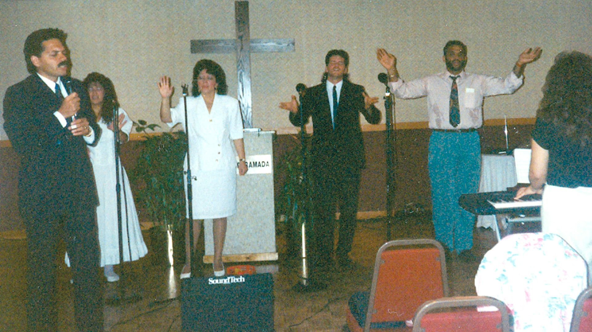
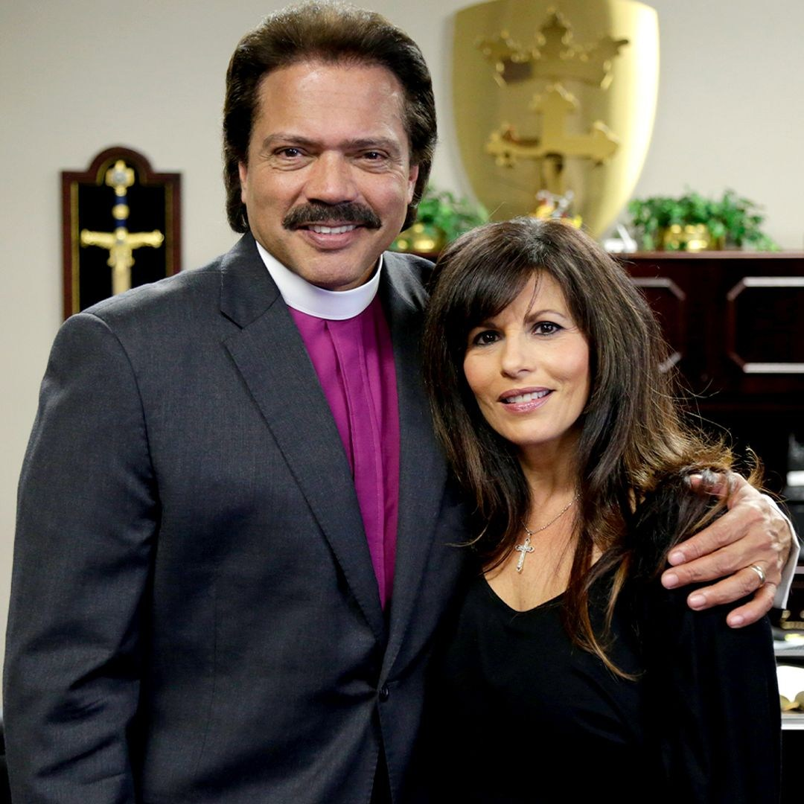
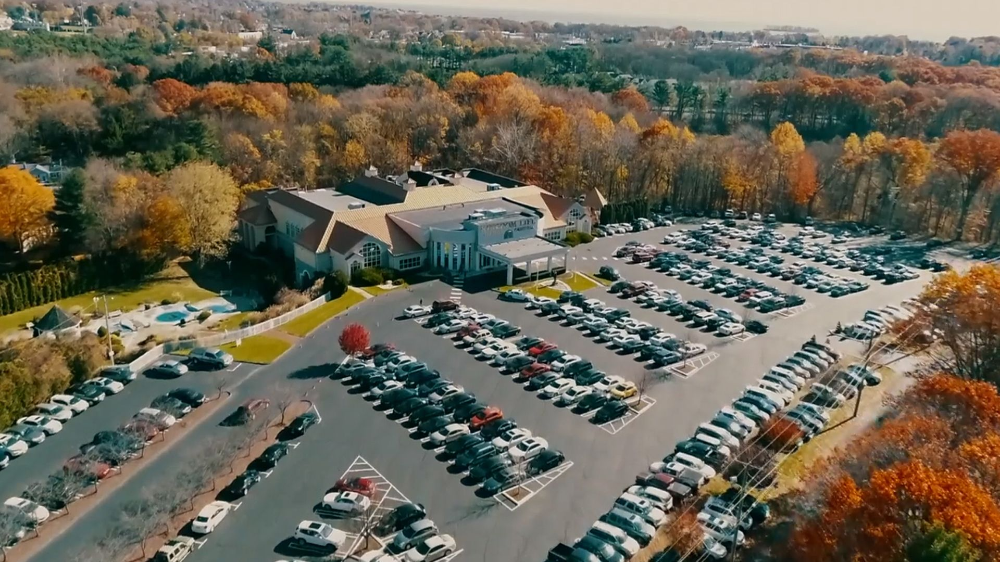

Start here / KINGDOM LIFE
A story still
unfolding.
Our Story
Meet the story, people, and purpose behind Kingdom Life.


Bishop Jay &
Jeannine Ramirez
Bishop Jay and Jeannine Ramirez founded and shaped Kingdom Life. Their leadership is woven into its mission, community, and vision for future generations.
Read their story
It takes a special kind of person to build without resources, see the unseen, and believe for the impossible. It takes a special kind of person to walk humbly, to love unconditionally, and to live with integrity. It takes the crafting and calling of God to have one person possess all of these traits. Blending savvy wisdom with personal discipline, Bishop has brought Kingdom Life from a God-given dream to the place we know it to be today. A life-long learner, Bishop has proven his words and insight to be relevant, trustworthy, and timely. Speaking from a place of revelation and from a higher, more big-picture perspective, he reminds us all that it is God’s solutions we seek, and God’s alone. By his side, with grace, strength, and passion, Jeannine has exemplified what it means to stand firm and protect the vision God placed in the heart of her husband, for their family, and this church for 30 years, all while making time to bless so many of us in the process. A true leading lady, Jeannine has proven it is possible, even in this current culture, to truly walk as a woman of grace and beauty.
How it started...
In 1991, Bishop Jay Ramirez, along with about 40 people, founded Kingdom Life Christian Church. The mission was clear, to proclaim and demonstrate the gospel of the Kingdom and the rule of Christ as God’s solution to the kingdoms of this world. The vision was colossal, to be an intergenerational, intercultural church.
Continue reading
A community that would teach and train practical biblical principles, preparing the next generations to discover and live through their God-given identity and purpose. A church that would break down cultural walls, welcoming all who would choose to join us, restoring the hurt and broken, and serving our community with humility and compassion. A resource to the local and global Body of Christ by collaborating with other ministries and churches.
Vision in action...
Anchored by the core principles of faith, hard work, and character that were instilled into him as a child, Bishop would go on to lead Kingdom Life as Senior Pastor for 30 years. Through his leadership, wisdom, and discipline Kingdom Life has been able to go where we could only imagine and become what we couldn’t have even dreamed of. Kingdom Life has served thousands and hundreds of thousands near and far, from working with local political leaders to overseeing a global network of churches, we strive to proclaim and demonstrate the good news of the Gospel to the individual and their respective communities.

Continuing the legacy...
Having served the community for more than three decades, Kingdom Life has had the privilege of experiencing the growth into who we are currently, and the vision to mature into who we are purposed to be.
Driven by a heart for God’s future, we are training and empowering a new generation of dynamic, younger leadership. Our mission remains simple and unwavering: this house belongs to Jesus, and His is the only voice we truly follow.
Read more about our Leadership